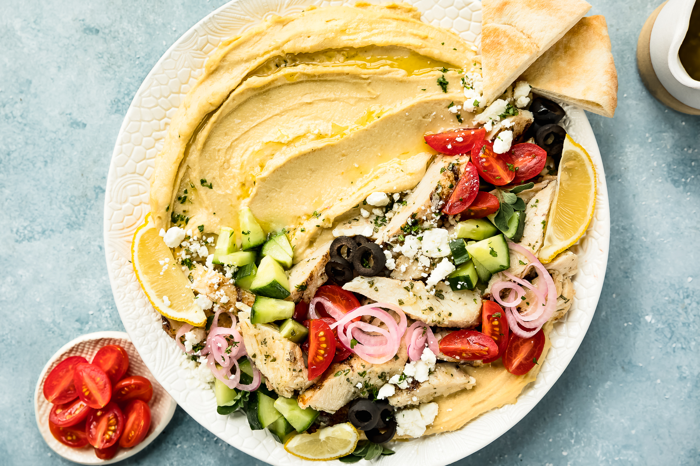

Hummus Bowl recipe
Ingredients:
- 1 container Heinen's cooked brown rice
- 1 15 oz. can Heinen's chickpeas, drained and rinsed
- 1 10 oz. container Heinen's roasted red pepper hummus
- 2 cups feta cheese, crumbled
- 1/2 cup roasted red peppers, chopped
- 1 cup kalamata olives, pitted
- 1/2 cup red onion, chopped
- 1/2 large English cucumber, diced
- 1 cup cherry tomatoes, halved
- 3 cups greens of your choice
- 4-5 green onions, white and green parts chopped
- 1/4 cup fresh parsley, chopped
Instruction:
Divide the cooked brown rice among four bowls. Divide the chickpeas, roasted red pepper hummus, feta cheese, roasted red peppers, olives, red onion, cucumbers, tomatoes, greens, green onions and parsley among the bowls. Sprinkle the za’atar or sumac on top of the hummus bowls. Enjoy!